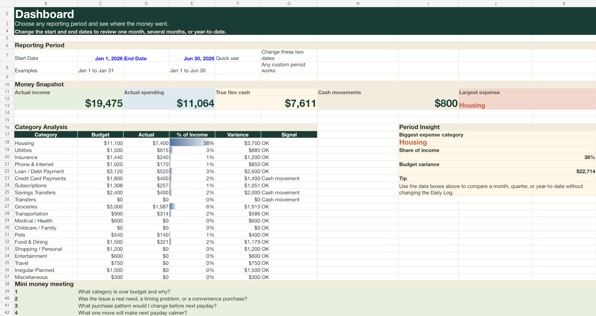

Paycheck-by-Paycheck Plan
Assign each deposit across bills, spending, savings, and debt before it arrives.
Accountant-backed paycheck clarity
The Money Leak Finder helps you compare your plan with real spending, see which categories are crowding your cash, and choose what to change next.

The real problem
A single balance does not show bill timing, debt pressure, subscriptions, savings, groceries, gas, and the purchases that make life feel normal. That is why people can make good money and still wonder where it went.
Profit Hunter starts with one rule: map the paycheck before the month starts improvising.
Your paycheck clarity workbook
A guided spreadsheet that compares budget to actual spending, highlights cash-flow pressure, maps bill timing, audits subscriptions, and calculates your true flex cash.
After subscribing, check your inbox or continue to the download page if Kit redirects you there.
Coming next
Assign each deposit across bills, spending, savings, and debt before it arrives.
Turn annual bills, repairs, holidays, and uneven expenses into manageable monthly amounts.
Compare payoff strategies and see how extra payments change the timeline.
Review rollovers, category trends, and longer-term progress with less manual work.
Why trust it
This is not another generic budget template. It is built for the exact moment money gets confusing: payday hits, bills are scheduled, debt is waiting, and the account balance looks more available than it really is.
The system turns a vague money fog into a handful of numbers you can actually move.